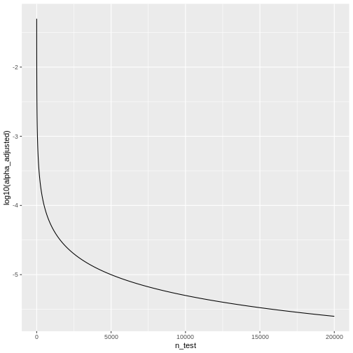

Family-wise error rate
Last updated on 2024-08-06 | Edit this page
Overview
Questions
- What is the family-wise error rate (FWER), and why is it important in multiple testing scenarios?
- How does the Bonferroni procedure adjust p-values to control the FWER, and what are its limitations?
Objectives
- Understand the concept of the family-wise error rate (FWER) and its significance in multiple testing, including the implications of making multiple comparisons without controlling for FWER.
- Learn the Bonferroni procedure for adjusting p-values to maintain the FWER at a specified level, and recognize when alternative methods may be more appropriate or effective in controlling for multiple comparisons.
In statistical hypothesis testing, conducting multiple tests simultaneously increases the likelihood of making at least one false-positive error. In this episode, we will explore the family-wise error rate (FWER), and discuss methods to account for multiple comparisons, using practical examples.
A Multi-Hypothesis Testing Framework
In multiple testing scenarios, we often have an overarching hypothesis that encompasses several individual hypotheses, each examining specific aspects or relationships within the data. This approach allows us to explore various facets of the research question comprehensively.
Going back to our study investigating the effects of air pollution on the prevalence of a disease, the overarching hypothesis could be formulated as follows:
Exposure to air pollution is associated with increased prevalence of the disease
Under this overarching hypothesis, several individual hypotheses can be formulated to examine different aspects of the relationship between air pollution exposure and disease prevalence. These individual hypotheses may focus on various pollutants, different health outcomes, or specific populations.
An example using three individual null hypotheses:
\(H_{0,1}\): Exposure to air pollution is not associated with increased disease prevalence in region 1.
\(H_{0,2}\): Exposure to nitrogen dioxide is not associated with increased disease prevalence.
\(H_{0,3}\): Long-term exposure to ozone (O3) is not associated with an increased prevalence of the disease.
The three null hypotheses can be combined to the following overall null hypothesis:
\(H_{0}\): Air pollution is not associated with an increased prevalence of the disease.
Callout
As soon as one of the individual null hypotheses is rejected, we also reject the overall null hypothesis. Rejecting the overall null hypothesis means that at least one of the individual null hypotheses is false. Therefore, we will want to make sure that we have not a single false positive among our individual hypothesis tests.

In this illustration, each individual hypothesis delves into a distinct facet of the overarching research inquiry, enabling us to thoroughly examine the intricate connection between air pollution exposure and disease prevalence. By scrutinizing the impacts of various air pollutants on the disease, this method encourages a systematic exploration of diverse factors and aids in revealing potential associations or patterns within the data set.
Now, let us assume that after data collection, for hypothesis 1, we find that 15 out of 100 individuals exposed to high levels of particulate matter develop the disease, for hypothesis 2, 20 out of 100 individuals exposed to high levels of nitrogen dioxide develop the disease and for hypothesis 3, 5 out of 100 individuals exposed to high levels of ozone develop the disease.
R
n = 100 # number of test persons
p = 0.04 # Known prevalence of the disease in the general population
individuals_suffered = c(15, 9, 5) # number of individuals who suffered from the disease for each hypothesis
We can visualise this as follows:
R
complement <- n - individuals_suffered
data <- rbind(individuals_suffered, complement)
colnames(data) <- c("particles","nitrogene", "O3")
rownames(data) <- c("disease","healthy")
mosaicplot(t(data),main="")

Let us assume we conduct statistical tests for each of these hypotheses, resulting in p-values for each test. For simplicity, let us maintain our significance level at \(\alpha=0.05\) for each individual test. We can conduct binomial tests for each hypothesis and calculate the p-values in R.
R
#Calculate the p-values for each hypothesis using the binomial probability mass function
p_values = sapply(individuals_suffered, function(x) {
p_value = binom.test(x,n=n,p=p)$p.value
return(p_value)
})
for (i in 1:length(p_values)) {
cat(sprintf("Hypothesis %d: p = %.4f\n", i, p_values[i]))
}# Print the p-values for each hypothesis
OUTPUT
Hypothesis 1: p = 0.0000
Hypothesis 2: p = 0.0190
Hypothesis 3: p = 0.6033The probability of having at least one false positive among \(m\) tests (FWER)
Let us assume each test has a probability \(\alpha\) of producing a false positive, and that we have \(m\) independent tests.
The probability that a single test does not produce a false positive is calculated as: \[1-\alpha\]
Since the tests are independent, the probability that none of the \(m\) tests produces a false positive is calculated as: \[(1-\alpha)^m\]
Therefore, the probability of at least one false positive is the complement of the probability that none of the tests produce a false positive, and is calculated as: \[P(\text{at least one false positive})=1−(1−\alpha)^m\]
- We can use R to calculate the probability of at least one false positive for our example with three tests:
R
m <- 3
alpha <- 0.05
1 - (1-alpha)^m
OUTPUT
[1] 0.142625- By decreasing the alpha.
The Bonferroni correction
Adjusting the significance level
Now, to calculate the probability of having any false positive within the set of tests (also known as family-wise error rate or FWER), we can use methods such as the Bonferroni correction. This method adjust the significance level for each test to control for multiple testing.
The Bonferroni procedure adjusts the significance level for each individual test by dividing the desired overall significance level by the number of tests conducted (m).
\[\alpha_{\text{Bonf}}= \alpha/m \]
Where:
α is the desired overall significance level (usually set to 0.05). m is the number of hypothesis tests conducted.
R
FWER <- 0.05# Define the desired Family-wise error rate
m <- length(p_values)# Calculate the number of hypothesis tests conducted (m)
alpha_bonf <- FWER / m # Calculate Bonferroni adjusted significance level
alpha_bonf
OUTPUT
[1] 0.01666667Since in our example above we have three tests, the Bonferroni corrected significance level is \(\alpha_{\text{bonf}} = 0.05/3 \approx 0.0167\).
In this lesson, we’ll not go into the proof for why this method works. But we can convince ourselves that it does, by calculating the FWER for with the adjusted significance level, using the formula derived above.
R
1 - (1-0.0167)^3
OUTPUT
[1] 0.04926799With the adjusted significance level of \(\alpha \approx 0.0167\) for three tests, we are back to the desired \(FWER\) of 5%.
In our example
For each individual test, we compare the calculated p-value to this adjusted significance level. If the p-value is less than or equal to 0.0167, we reject the null hypothesis for that test.
Based on the Bonferroni correction, we reject the null hypothesis for Hypotheses 1, indicating significant associations between particulate matter with disease prevalence. However, for Hypothesis 2 (nitrogen dioxide exposure) and 3 (ozone exposure), we fail to reject the null hypothesis, suggesting no significant association with disease prevalence at the adjusted significance level. This adjustment for multiple testing helps control the overall probability of making at least one false-positive error across all tests conducted.
In this example, while the evidence supports associations between certain air pollutants and disease prevalence, it does not provide conclusive evidence to reject the overarching null hypothesis entirely. Instead, it suggests a nuanced interpretation wherein the relationship between air pollution exposure and disease prevalence may vary depending on the specific pollutant considered. Therefore, further investigation and analysis may be necessary to fully elucidate the relationship between air pollution exposure and disease prevalence and to refine the overarching null hypothesis accordingly. This could involve exploring additional factors, conducting more comprehensive analyses, or considering alternative statistical approaches to account for potential confounding variables or sources of variability in the data.
Adjusting the p-value
Instead of changing the significance level, another (equivalent) calculation is adjusting the p-values obtained from individual hypothesis tests, followed by comparing the adjusted p-values to the desired FWER. With this procedure, we can reject those individual null hypotheses that have a p-value below the desired FWER (\(p < \text{FWER}\)).
\[p_{\text{Bonf}}= p \times m\]
- You can look up the function as follows:
R
help("p.adjust")
2.In R, one can adjust the p-values as follows:
R
p.adjust(p_values, method = "bonferroni")
OUTPUT
[1] 3.244612e-05 5.697576e-02 1.000000e+00- We can check which of the individual hypotheses will be rejected at a FWER=0.05:
R
p.adjust(p_values, method = "bonferroni") < 0.05
OUTPUT
[1] TRUE FALSE FALSEThe conclusion is the same as when changing the significance level for each test.
Family-wise error rate and power
What is statistical power?
Statistical power is the probability of detecting an effect with a statistical test, given that the effect really exists. Expressing this with the terms that we learned in this tutorial, power is defined as
\[ P(\text{rejection} | \text{null hypothesis is false}).\]
The Bonferroni correction decreases the power of the test, especially when we have many tests.
The number of tests matters
Remember that the adjusted significance level depends on the number of tests that we conduct:
\[\alpha_{\text{Bonf}}= \alpha/m \]
Let’s look at some adjusted significance levels for different numbers of tests, given that we like to control the family-wise error rate at \(\alpha_\text{FWER} = 0.05\):
R
n_test <- seq(1,20000)
alpha_adjusted <- 0.05/n_test
data.frame(n_test,alpha_adjusted) %>%
ggplot(aes(x=n_test, y=log10(alpha_adjusted)))+
geom_line()
 We see that the adjusted \(\alpha\) is dropping quickly. For \(20000\) tests, which is a reasonable number in genomic screens, alpha will be:
R
last(alpha_adjusted)
OUTPUT
[1] 2.5e-06We’ll only reject the null for tests that produce a p-value \(<0.0000025\), which means the chances of finding a hit are reduced drastically compared to before adjustment.